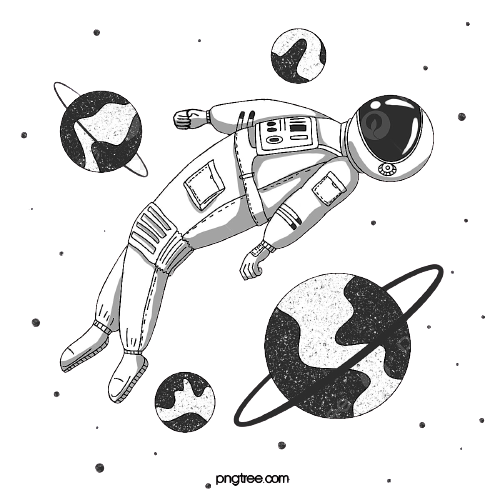
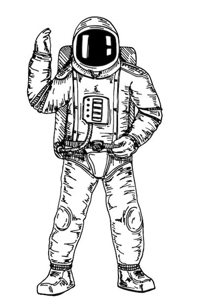

Prototyp autora prezentacji (slajd 14)
Wsparcie dla tematów kosmicznych i technologicznych

Prototyp astronauty (slajd 14)
Wsparcie dla tematów kosmicznych i technologicznych

Prototyp działającej drukarki 3D (slajd 9)
Ta drukarka jest używana przez naukowca zajmującego się rakietami
Astronauta i rakieta (slajdy 4, 7, 11)
Wyświetlanie procesu automatyzacji
Krater księżycowy (slajd 9)
Teksturowanie gleby Księżyca
Roślina zanieczyszczająca (slajd 12)
Przemysłowa działalność człowieka
zanieczyszczająca przyrodę

Rakieta (slajd 10)
Rakieta, będąca efektem działalności
drukarek 3D i innych asemblerów

Ikona wyświetlania informacji
o obiekcie (slajd 9)
Przyciąga do obiektu za pomocą
linii odniesienia

Zdjęcie sondy (slajd 7)
To jest wyraźny przykład
automatyzacji procesów dostaw
Sztuczna inteligencja (slajd 8)
Wynik działalności człowieka:
AI, korona stworzenia,
sztuczna inteligencja, wynik działalności człowieka

Kask wirtualnej rzeczywistości (slajd 3)
Kolejny rezultat działalności człowieka:
korona twórczości człowieka

Podstawowa panorama przestrzeni
Wykorzystane jako tło dla całej prezentacji